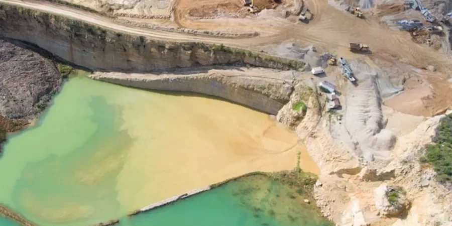

En Bilbao, ofrecemos servicios integrales de geotecnia que abarcan desde la caracterización del subsuelo hasta el diseño de cimentaciones y la supervisión de obras. Nuestra experiencia local nos permite interpretar correctamente las condiciones del terreno, proponer soluciones de cimentación eficientes y garantizar el cumplimiento normativo. Realizamos ensayos de campo con equipos calibrados, estudios de permeabilidad en campo y análisis de estabilidad de taludes, todo respaldado por informes técnicos rigurosos. Trabajamos en estrecha colaboración con contratistas y autoridades locales para asegurar que cada proyecto avance sin contratiempos, desde el estudio geotécnico inicial hasta la puesta en obra.

Imagen técnica de referencia — Bilbao
Descripción del proceso
Bilbao se asienta sobre un sustrato geológico complejo, dominado por materiales del Cretácico y Terciario. La llanura aluvial del Nervión-Ibaizabal está formada por depósitos cuaternarios de arcillas, limos y arenas, con frecuentes niveles de gravas y cantos rodados. Estos suelos aluviales presentan alta compressibilidad y baja capacidad portante, lo que exige cimentaciones profundas o mejoras del terreno. Bajo el aluvial, aparecen margas y calizas del Cretácico Superior, que ofrecen un basamento competente pero con posibles discontinuidades y zonas karstificadas.
El nivel freático es somero, típicamente entre 1 y 4 metros de profundidad, lo que condiciona las excavaciones y requiere sistemas de drenaje temporales. Además, la región presenta una sismicidad moderada (aceleración básica de 0.04-0.08 g según la NCSE-02), por lo que en proyectos singulares se realizan estudios de amplificación sísmica mediante técnicas de microtremores (HVSR) para evaluar la respuesta local del terreno. La presencia de antiguos rellenos sanitarios y depósitos industriales en algunas zonas añade complejidad a la caracterización ambiental.
Aspectos locales
Nuestra firma cuenta con experiencia regional consolidada en el País Vasco, habiendo participado en estudios geotécnicos para promociones residenciales, centros comerciales y obras lineales en Bilbao y su área metropolitana. Disponemos de laboratorio propio con equipos calibrados para ensayos de clasificación, resistencia y deformabilidad. Todos nuestros informes cumplen estrictamente con el CTE y la normativa autonómica vasca, y coordinamos directamente con los colegios profesionales y las administraciones locales para agilizar las tramitaciones. Esta presencia local nos permite anticipar problemas típicos del terreno bilbaíno y ofrecer soluciones geotécnicas fiables y eficientes.
En España, la normativa geotécnica de referencia es el Código Técnico de la Edificación (CTE), en particular el Documento Básico SE-C (Seguridad Estructural: Cimentaciones). Para obras de infraestructura, se aplica la Guía de Cimentaciones en Obras de Carretera del Ministerio de Fomento. Los ensayos de campo se realizan según normas UNE (equivalentes a ASTM): UNE 103800 para el ensayo de penetración estándar (SPT), UNE 103804 para el ensayo de penetración dinámica, y UNE 103405 para la determinación de la permeabilidad in situ. Para el análisis sísmico, se emplea la NCSE-02 (Norma de Construcción Sismorresistente Española) y, en proyectos internacionales, la ASCE 7-22.
Preguntas más comunes
¿Qué tipo de estudios geotécnicos se requieren para construir en Bilbao?
Para cualquier edificación en Bilbao, el CTE exige un estudio geotécnico que incluya al menos sondeos mecánicos con ensayos SPT, calicatas para inspección visual, y determinación del nivel freático. En la llanura aluvial, suelen ser necesarios sondeos de 15 a 25 metros de profundidad para atravesar los depósitos blandos y alcanzar el sustrato rocoso. Además, se recomienda realizar ensayos de permeabilidad in situ cuando se prevean excavaciones por debajo del nivel freático.
¿Cómo afecta la presencia del río Nervión a los proyectos de cimentación?
El río Nervión ha depositado suelos aluviales muy blandos y heterogéneos, con alta compressibilidad y baja capacidad portante. Esto obliga a menudo a usar cimentaciones profundas (pilotes) o a mejorar el terreno mediante columnas de grava o inyecciones. El nivel freático elevado también exige sistemas de agotamiento durante la excavación y puede requerir la impermeabilización de sótanos. Nuestros estudios incluyen la evaluación detallada de estos condicionantes para dimensionar correctamente la cimentación.
¿Qué normativa sismorresistente se aplica en el País Vasco?
En el País Vasco es de aplicación la Norma de Construcción Sismorresistente Española (NCSE-02), que establece una aceleración sísmica básica de 0.04 g para Bilbao, aunque en suelos blandos puede amplificarse hasta 0.08 g. Para edificios de importancia especial o con ciertas tipologías estructurales, se exige un estudio de peligrosidad sísmica específico que considere la amplificación local del terreno. En estos casos, realizamos ensayos de microtremores (HVSR) para obtener la frecuencia natural del depósito.
¿Cuánto tiempo suele llevar un estudio geotécnico en Bilbao?
Un estudio geotécnico completo para un proyecto tipo en Bilbao, incluyendo trabajo de campo (sondeos, calicatas), ensayos de laboratorio y redacción del informe, suele requerir entre 3 y 5 semanas. Los plazos pueden acortarse si se dispone de acceso inmediato a la parcela y se priorizan los ensayos. Para proyectos urgentes, ofrecemos campañas exprés con informes parciales en 2 semanas. Siempre coordinamos con la dirección facultativa para ajustar el alcance a los plazos de la obra.